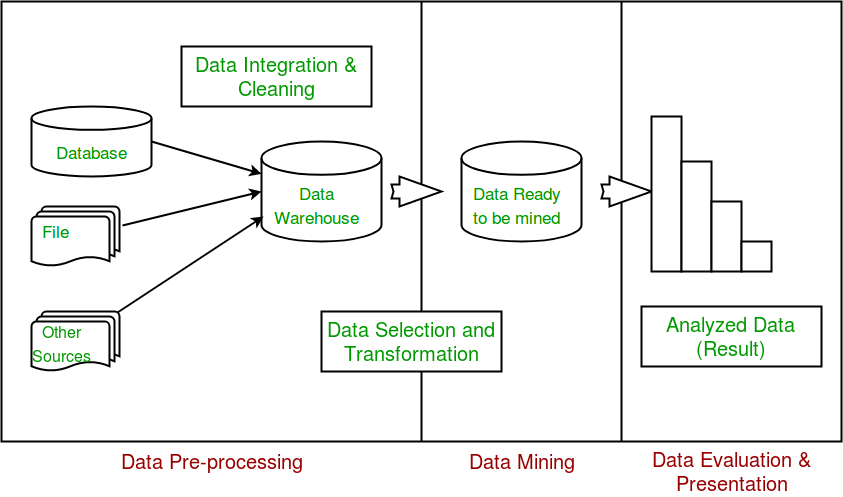

In general terms, “Mining” is the process of extraction of some valuable material from the earth e.g. coal mining, diamond mining etc. In the context of computer science, “Data Mining” refers to the extraction of useful information from a bulk of data or data warehouses. One can see that the term itself is a little bit confusing. In case of coal or diamond mining, the result of extraction process is coal or diamond. But in case of Data Mining, the result of extraction process is not data!! Instead, the result of data mining is the patterns and knowledge that we gain at the end of the extraction process. In that sense, Data Mining is also known as Knowledge Discovery or Knowledge Extraction.
Gregory Piatetsky-Shapiro coined the term “Knowledge Discovery in Databases” in 1989. However, the term ‘data mining’ became more popular in the business and press communities. Currently, Data Mining and Knowledge Discovery are used interchangeably.
Now a days, data mining is used in almost all the places where a large amount of data is stored and processed. For example, banks typically use ‘data mining’ to find out their prospective customers who could be interested in credit cards, personal loans or insurances as well. Since banks have the transaction details and detailed profiles of their customers, they analyze all this data and try to find out patterns which help them predict that certain customers could be interested in personal loans etc.
Main Purpose of Data Mining
Basically, the information gathered from Data Mining helps to predict hidden patterns, future trends and behaviors and allowing businesses to take decisions.
Technically, data mining is the computational process of analyzing data from different perspective, dimensions, angles and categorizing/summarizing it into meaningful information.
Data Mining can be applied to any type of data e.g. Data Warehouses, Transactional Databases, Relational Databases, Multimedia Databases, Spatial Databases, Time-series Databases, World Wide Web.
Data Mining as a whole process
The whole process of Data Mining comprises of three main phases:
1. Data Pre-processing – Data cleaning, integration, selection and transformation takes place
2. Data Extraction – Occurrence of exact data mining
3. Data Evaluation and Presentation – Analyzing and presenting results

In future articles, we will cover the details of each of these phase.
Applications of Data Mining
1. Financial Analysis
2. Biological Analysis
3. Scientific Analysis
4. Intrusion Detection
5. Fraud Detection
6. Research Analysis
Real life example of Data Mining – Market Basket Analysis
Market Basket Analysis is a technique which gives the careful study of purchases done by a customer in a super market. The concept is basically applied to identify the items that are bought together by a customer. Say, if a person buys bread, what are the chances that he/she will also purchase butter. This analysis helps in promoting offers and deals by the companies. The same is done with the help of data mining.